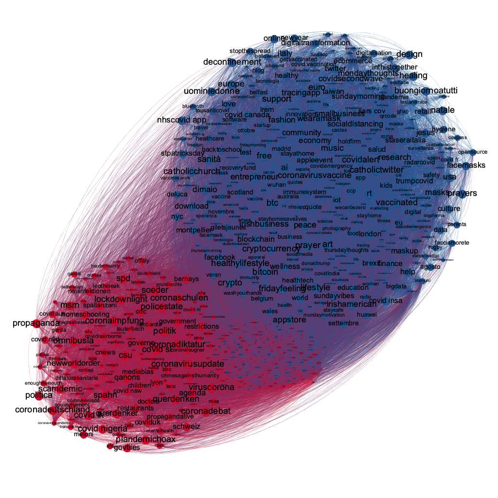

We performed sentiment analysis and extraction of opinions on a dataset consisting of tweets that were collected from July 2020 to July 2021 (as already mentioned in the basic information section).
The sentiment analysis was performed on the following languages: English, French, German, Spanish and Italian. The pie chart below shows the distribution of the languages in the datasets. As expected, the most popular language is English, followed by Italian and German, with Spanish and French having approximately the same number of tweets. The pie chart also shows the share of unclassified tweets (that the standard Twitter engine was not able to identify the language of the text inside a tweet), and that of other languages (i.e. a small percentage of different languages not included in our study).
In order to extract negative, positive and neutral sentiments, different pre-trained BERT models have been used in the five most popular languages mentioned above, with the tweet-texts cleaned by removing alphanumeric characters and hyperlinks. The pre-trained BERT models and the training sets used to train the classifiers are listed below.
In details, the % of tweets are classified without
opinions ( tweets) and labeled as Neutral tweets.
% of the tweets have been excluded from our analysis because
either the language detected is not among the languages we take into account for the analysis
( tweets)
or the Twitter engine for language classification is not able to detect the languages
( tweets).
The tweets with opinions are the
The table below shows the tweet classification by sentiment for each contact tracing app. On average, the neutral tweets are half of the total tweets for each app, except for Immuni with 65% and StopCovid with 14%.
Except for Erouska and Smittestopp, the number of positive tweets is less from the negative tweets for the rest of the contact tracing apps. Furthermore, the percentage of positive tweets does not exceed 20%, with the exception of the (French) mobile app StopCovid, with 37% positive tweets.
Negative tweets are predominant except for Erouska and Smittestopp, with the ratio between positive and negative tweets to be less than 0.5 for some apps, thus indicating very negative opinions.
The above stacked barchart shows the distribution of the tweets collected about the european contact tracing apps that have been classified as neutral, positive and negative. On average, the number of negative tweets is much greater than that of positive tweets except for the French mobile apps where the ratio of positive and negative tweets is 1.
We analyse here the sentiments and opinions taking into account geographical and temporal information, starting with the mobile apps that refer to specific countries, like the NHS covid-19 app for UK, Immuni for Italy and continuing with for the rest of mobile apps. However, we have detected a subset of tweets which mention two or more mobile apps but the size of this dataset is very low with respect to the whole dataset. Consequently, we developed the following hierarchical chart which shows how the twitter users think in general about the covid-19 contact tracing apps in each country. The hierarchical chart shows that in general the users are negative, except for the the ones from UK and France.
As already mentioned in the basic information section, place names have been extracted from the tweet-texts. Thus, we have combined the geographic and sentiment analysis by filtering the dataset and obtaining only geo-sentiment tweets. We have detected tweets where the tweet-text contains almost one place name and an opinion. We have taken into account only the geo-sentiment tweets in Europe, which are .
The following maps show the geographical distribution of geo-sentiment tweets. For each hex-grid, the intensity of the background colour represents the number of tweets detected in its area. Also, a double vertical bar chart is displayed, where the blue bar represents the positive tweets and the red the negative tweets. We observe that in most of the countries there is high activity on tweeter in the capital, as is the case for Paris, London, Dublin and Madrid. We notice, though, a different pattern in Italy and Germany, where the number of tweets is distributed more homogeneously.
The chart below shows the trend of positive and negative tweets from July 2020 to July 2021. We notice a differentiation in sentiment polarisation in the opinions expressed in tweets during October and November 2020 that could be related to the covid-19 second wave. On September 24th we have the most positive day with 2076 positive tweets, with the most negative day being October 12th with 2005 negative tweets. After December we have a flattening activity of positive tweets until the end of April, when the users start again to publish positive tweets. On the other hand, the trend of negative tweets is quite active, with some negative days until June. More details about specific events are provided in the event section.
where in normalized beetween [0,1] and the sent can be 0 or 1, which detonote, respectly, a negative tweet sent=0 or positive tweet whensent=1.
Secondly, we have normalized the weighted tweets by the following formula:
where p and n are respectively the number of positive and negative tweets regarding hashtag.
Finally, by applying the above formula to each hashtag, we can calculate the hashtag orientation, which is between the values -1 and 1, where 1 is highly positive and -1 highly negative respectively. We consider the 0 value not as neutral but only as an equal distribution of positive and negative opinions.
The image below shows sentiment hashtag network. The blue nodes are positive hashtags and the red nodes are negative hashtags. The size of the node is proportional to the sentiment index. Thus, in the large nodes the orientation is strongly positive or negative, depending on the colour of the node. Small nodes, in the center of the network, have weak orientation, with an equal number of positive and negative tweets. Furthermore, the network was pruned by removing the nodes with a low degree and the neutral tweets were ignored.
